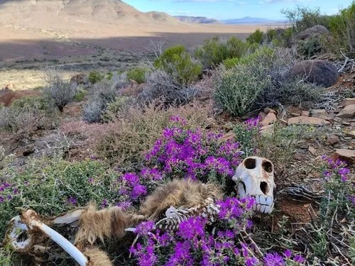

哺乳动物 · 动物界
豚尾狒狒 Papio ursinus

南部非洲体型最大的狒狒，毛色深灰近黑，尾常拱起弯向背部形似猪尾，群体等级森严，能在半荒漠与山地间觅食。
- 分类
- 门脊索动物门纲哺乳纲目灵长目科猴科属狒狒属
- 栖息环境
- 稀树草原、山地灌丛、半荒漠与海岸岩地，适应性很强
- 地理分布
- 非洲南部，包括南非、纳米比亚、博茨瓦纳、津巴布韦、莫桑比克、赞比亚与安哥拉
- 保护级别
- IUCN 无危（LC）
物种志
豚尾狒狒是体型最大的狒狒之一，体长 50–115 cm，尾长约 45–70 cm，雄性体重 26–45 kg，雌性约 15–20 kg。毛色深灰褐至近黑色，面部黑色，吻部粗壮，尾常拱起弯向背部，形似猪尾，因而得名。
它们生活在南部非洲的稀树草原、山地灌丛和半荒漠，分布覆盖南非、纳米比亚、博茨瓦纳、津巴布韦、莫桑比克、赞比亚与安哥拉。群体规模约 20–100 只，成员间等级分明，雄性通过犬齿展示和打斗争夺地位。食物很杂，包括果实、草籽、块根、昆虫、鸟卵和小型哺乳动物。妊娠期约 180 天，每胎一仔，寿命约 30 年。
形态与习性
- 食性果实、草籽、块根、昆虫、鸟卵及小型哺乳动物
- 体长50–115 cm，尾长 45–70 cm
- 体重雄性 26–45 kg，雌性 15–20 kg
- 寿命野外约 30 年
- 繁殖妊娠期约 180 天，每胎一仔
- 特点尾拱起如猪尾，是体型最大的狒狒之一
趣味知识
- 豚尾狒狒的尾在行走时向上拱起、弯向背部，与猪的尾巴相似，故名豚尾。
- 它们是南部非洲少数能利用半荒漠环境的灵长类，可长时间不饮水。
- 雄性离群成年后会挑战原有首领，权力更替常伴随激烈的犬齿对峙。